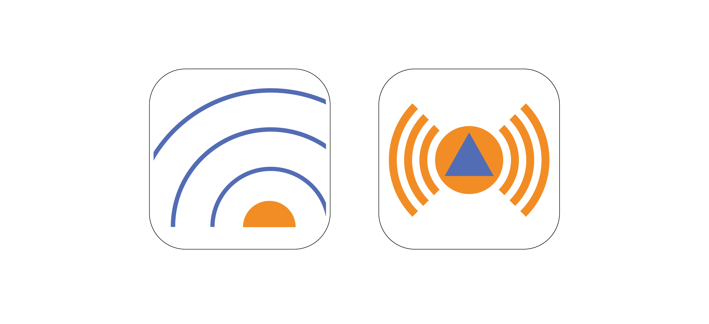

Genau wie in anderen Bereichen des gesellschaftlichen Lebens und der Wirtschaft gibt es auch im Bevölkerungsschutz innovative Entwicklungen, Systeme und Lösungsansätze, welche Krisen vorbeugen, ihre Auswirkungen abschwächen oder bei der Wiederherstellung der Infrastruktur helfen. Wichtig ist die stetige Weiterentwicklung von Aktionsplänen und die Zusammenarbeit von unterschiedlichen Bereichen, um die Resilienz der Bevölkerung weiter zu stärken und den Bevölkerungsschutz zu verbessern. Im folgenden werden Lösungsansätze vorgestellt, die sich aktuell in der Planung oder bereits in Tests unter realen Bedingungen befinden.
Taktische Zeichen
Als Taktische Zeichen bezeichnet man Symbole, die im Katastrophenschutz von Behörden oder Organisationen mit Sicherheitsaufgaben eingesetzt werden. Sie dienen der einheitlichen Kommunikation und graphischen Darstellung auf Lageplänen, Einsatzkarten oder Stärkemeldungen. Taktische Zeichen basieren auf der Grundlage von militärischen Zeichen und bestehen meist aus geometrischen Grundformen, welche die Obergruppen der unterschiedlichen Zeichen bilden. Taktische Zeichen werden etwa von Polizei, Feuerwehr, THW, Rettungsdiensten und weiteren Akteuren im Zivil- und Katastrophenschutz eingesetzt. Seit der Einführung in der Bundeswehr 1968 wurden die taktischen Zeichen im Katastrophenschutz kontinuierlich angepasst und erweitert. Seit 2012 empfiehlt die Ständige Konferenz für Katastrophenvorsorge und Katastrophenschutz (SKK), eine einheitlich festgeschriebene Symbolsammlung für den Katastrophenschutz, welche in der Dienstvorschrift (DV) 102 festgeschrieben ist. Die DV 102 wird heute von nahezu allen Akteuren des Katastrophenschutzes in Deutschland verwendet und ermöglicht eine schnelle, übergreifende Kommunikation im Krisenfall mit allen Beteiligten. Auch folgt sie den Regeln, der für die NATO bestimmten taktischen Zeichen, was einen Austausch auf internationaler Ebene erleichtert. 1
Für außenstehende Personen ist das System der taktischen Zeichen wenig intuitiv, doch es verfolgt ein stetiges Muster. Grundsätzlich gibt es die graphische Formsprache der Zeichen und zusätzlich eine mögliche Farbcodierung, die weitere Informationen bereitstellen kann. Dabei tragen wichtige Ziele im Krisenmanagement wie etwa die Dienststelle, Führungsstelle, Einrichtungen und Personen geometrische Formen. Mit einem entsprechenden Farbcode können diese dann unterschiedliche Zustände abbilden. Des Weiteren ist das System der taktischen Zeichen ein offenes System und kann je nach Situation mit zusätzlichen Informationen ergänzt oder modifiziert werden. Dabei kann die Information innerhalb oder außerhalb der Zeichen angebracht werden. Außerdem haben Institutionen und Einrichtungen innerhalb des Krisenmanagements eindeutig zuzuordnende Farben. So nutzt die Feuerwehr etwa einen roten Untergrund, das Technische Hilfswerk einen blauen und Polizei und Zoll einen grünen Untergrund zur eindeutige Erkennung, um hier nur ein paar zu nennen. Bei der Darstellung von spezifischen Aufgaben innerhalb der Gefahrenabwehr gibt es zahlreiche Zeichen, die sich sehr vereinfacht an den Darstellungen der Geräte oder Vorgänge orientieren. 2
Durch die meist abstrakte Darstellung der Zeichen oder Tätigkeiten lassen sich für Unbeteiligte Personen oft nur wenige Anhaltspunkte für ihre wahre Bestimmung erahnen. Das unterscheidet die taktischen Zeichen grundlegend von gängigen Piktogrammen. Wobei Piktogramme auf die eindeutige Erkennbarkeit und Identifikation von Zielen oder Tätigkeiten abzielen, haben taktische Zeichen die Aufgabe Prozesse oder Ziele im Krisenmanagement graphisch eindeutig und einfach für geschulte Personen bereitzustellen. Sie sollen die Arbeit der verschiedenen Akteure untereinander vereinfachen und ein möglichst genaues Lagebild des jeweiligen Situation abbilden. Ein weiterer Vorteil der taktischen Zeichen bietet die Darstellung ohne weiteren Beschreibungstext. So können Informationen direkt von Helfenden auf Lagekarten aufgenommen werden und es bedarf keine zusätzliche Erläuterung durch Personen oder Textform.
Auch hier zeigt sich, dass der Einsatz von einheitlich gelernten Zeichen einen positiven Effekt auf die schnelle Erkennbarkeit hat und Institutionsübergreifend verstanden werden kann. Auch im internationalen Zusammenspiel können so Informationen und eine Einheitliche Darstellung klar und eindeutig vermittelt werden, selbst wenn Sprachbarrieren den Austausch von Berichten oder Texten erschweren. Auch der Einsatz von Farbe und einer dementsprechenden Codierung findet sich in der Gestaltung allgemeiner Leitsysteme wieder und zeigt den positiven Einfluss von farblichen Einteilungen für unterschiedliche Bereiche und Aufgaben. Gerade im Krisenmanagement ist Zeit eine kostbare Ressource und sollte möglichst zielführend eingesetzt werden, wobei taktische Zeichen und Piktogramme sowohl für Helfende als auch für Betroffene Personen eine wichtige Stütze sind.
Ich kann hier nur einen kleinen Einblick in den Bereich der taktischen Zeichen geben und das Thema lediglich anreißen. Eine ausführliche Beschreibung mit allen aktuellen taktischen Zeichen und deren farblicher Erkennung, findet sich in der Dienstvorschrift 102.
Warn-Apps
Um die Bevölkerung vor nahenden Schadenereignissen zu warnen, gibt es nicht nur altbekannte Methoden wie Sirenen, Radio, Fernsehen oder Durchsagen der Einsatzkräfte. In den letzten Jahren wurde die Nutzung von Warn-Apps für das Smartphone weiter vorangetrieben. Die beiden genutzten Apps des Katastrophenschutzes in Deutschland sind die App „NINA“ und die „KATWARN“-App. Diese können im Notfall Warnmeldungen direkt auf die Mobiltelefone von Bürgerinnen und Bürgern in betroffenen Gebieten senden und diese vor anstehende Gefahren warnen. Die Apps unterscheiden sich leicht voneinander. Die Warn-App Nina wurde vom Bundesamt für Bevölkerungsschutz und Katastrophenhilfe (BBK) entwickelt. Sie bündelt Warnmeldungen des deutschen Wetterdienstes, des Bevölkerungsschutzes als auch Hochwassermeldungen der Länder. Die Warnmeldungen können dann für Orte oder Umkreise freigeschaltet werden. Zudem können bundesweit ausgerufene Gefahren auf einer Karte eingesehen werden.
Die Entwicklung der KATWARN-App wurde durch öffentliche Versicherer und des Fraunhofer-Institut umgesetzt. Sie bezieht ihre Daten von Bund, Ländern und Behörden, sowie Betreibern kritischer Infrastruktur wie der Feuerwehr, Polizei, und Hochwasser- und Erdbebenzentralen. Es können themenbezogene Hinweise, aber auch Hinweise zu Großveranstaltungen beispielsweise Festivals abgerufen werden. Auch die KATWARN-App gibt einen Überblick über aktuelle Gefahrenstellen im ganzen Land und kann zudem im europäischen Ausland genutzt werden. 5
 6
Cell-Broadcast
Mit der Einführung des Cell Broadcast-Systems im Februar 2023 wurde ein lange geplantes Vorhaben des Bundes umgesetzt. Das Cell Broadcast-System sendet wie auch die Warnapps Warnmeldungen auf das Smartphone. Die Installation einer Warnapp wie Katwarn oder Nina, sowie eine aktive Internetverbindung sind jedoch nicht nötig, was die Erreichbarkeit innerhalb der Bevölkerung erhöhen soll. Wird in bestimmten Regionen ein Alarm ausgelöst, sendet das System einen Signal an alle Smartphones, die sich zum Zeitpunkt in den Zellen der Netzbetreiber befinden. Die Warnmeldung wird, anders als bei herkömmlichen SMS, direkt lesbar im Sperrbildschirm angezeigt. Zusätzlich ertönt ein lauter Warnton über die Lautsprecher des Smartphones und der Vibrationsalarm wird ausgelöst, unabhängig von den Einstellungen der Nutzerinnen und Nutzer. Die Nachrichten werden über das Standard SMS-CB Netz versendet, welches das normale Mobilfunknetz im Notfall nicht überlastet. Allerdings gibt es auch Szenarien, die eine präzise Warnung verhindern können. So werden keine Warnmitteilungen gesendet, wenn die Nutzer:innen keinen Netzempfang haben, sich das Smartphone im Flugzeugmodus befindet, der Akku leer ist oder keine SIMKarte eingelegt wurde. 7
Modulares Warnsystem MoWaS
Um die Bevölkerung auf möglichst vielen Wegen erreichen zu können, wurde das Modulare Warnsystem (MoWaS) entwickelt. Das MoWaS wurde deutschlandweit 2011eingeführt und löste das Satellitengestützte Warnsystem (SatWaS) ab. Mit insgesamt 132 Sende- und Empfangsstationen deckt das System das gesamte Bundesgebiet ab. Das MoWaS gibt Warnungen über Feuer, Gefährdung der Versorgung und Infrastruktur, öffentliche Sicherheit, Wetterereignisse und biologische, chemische, sowie radioaktive Gefahren ab. Das MoWaS ist so konzipiert, dass gesendete Warnmeldungen auf möglichst vielen Plattformen und Medien ausgegeben werden. So gibt es Schnittstellen zu Radio, Fernsehen, Internetseiten in betroffenen Gebieten, aber auch zu Warn-Apps wie Nina oder Katwarn und dem Cell Broadcast- System. Zudem ist das System in der Lage Textnachrichten auf digitale Werbetafeln im Stadtgebiet, Fahrgastanzeigen im öffentlichen Nahverkehr und sogar Taxi-Dach-Werbung auszuspielen. Außerdem können stationäre Sirenensysteme im gesamten Bundesgebiet mit entsprechenden Warnmeldungen bespielt werden. Durch die Übertragung der Warnmeldungen via Satellit, ist eine Erreichbarkeit der Krisengebiete auch bei Stromausfällen gewährleistet. Das MoWaS sendet mit jeder Warnmeldung auch einen sogenannten Event-Code. Dieser regelt die Darstellung auf dem jeweiligen Endmedium je nach Gefährlichkeit der Meldung. Auch die Übersetzung in andere Sprachen ist durch den Instruction- Code bestimmt und lässt die Meldungen am Smartphone der Betroffenen Personen in der jeweils eigens festgelegten Sprache erscheinen. 8
Das Mobile Warnsystem ist eine elementare Schnittstelle zwischen Behörden und Betroffenen, die stetig erweitert und verbessert wird, damit im Ernstfall möglichst viele Menschen vor anstehenden Gefahrenlagen gewarnt werden können.
Bundesweiter Warntag
Um die Warnsysteme zu testen, wurde der sogenannte „Bundesweite Warntag“ ins Leben gerufen. Dieser findet immer am dritten Donnerstag im September statt und beinhaltet die Auslösung aller Warnmittel, die für den Katastrophenschutz zur Verfügung stehen. Diese sind unter anderem die Warnapps Katwarn und Nina, sowie das Cell Broadcast-System, aber auch über Radio und Fernseher werden Warnungen abgespielt. Außerdem steht es den teilnehmenden Landkreisen und Kommunen frei, ihre stationären Warnmittel wie Sirenen oder Lautprecherwagen einzusetzen. Am Ende der Warnübung erfolgt eine Entwarnung über die selben Kanäle. Neben der Erprobung der Warninfrastruktur unter realen Bedingungen wird der Bevölkerung auch Wissen rund ums Thema bereitgestellt. 9
Durch andauernde Verbesserungen, Pannen im Vorjahr und den Nachwirkungen der Flutkatastrophe 2021 im Ahrtal fiel der Warntag im selben Jahr aus. Der Warntag 2022 konnte allerdings laut Angaben des Bundesamtes für Bevölkerungsschutz und Katastrophenhilfe (BBK) mehr als 90 Prozent der Bevölkerung über mindestens ein Warnmedium erreichen, was eine durchaus zufriedenstellende Statistik bestärkt. 7
Roboter als mechanische Helfer
Die Sicherheit von Rettungskräften im Katastrophenschutz hat oberste Priorität und muss unter allen Umständen und zu jeder Zeit gewährleistet werden. Um Betroffenen zu helfen, bei denen der Einsatz von menschlichen Einsatzkräften zu gefährlich ist, wird aktuell die Unterstützung durch Roboter getestet. Das Robotics Innovation Center des deutschen Forschungszentrums für Künstliche Intelligenz (DFKI) hat in Zusammenarbeit mit dem THW einen teilweise autonom agierenden Roboter entwickelt. Dieser hochmoderne Assistenzroboter wurde für den autonomen Materialtransport zwischen zwei Punkten entwickelt und reagiert auf Gestensteuerung der Einsatzkräfte. In bereits erfolgreich absolvierten Tests des THW hat der Roboter namens „Kratos“ eine Reihe an Übungen durchlaufen. Er hat etwa einen 120 Kilogramm schweren Generator befördert, konnte Bahngleise problemlos überwinden und einen Deichhügel erklimmen. Auch bei schlechter Sicht und Dunkelheit konnte der Roboter einwandfrei auf Signale der Einsatzkräfte reagieren. Nach der Evaluation der erhobenen Daten soll der kleine Helfer weiter verbessert werden, um den Rettungskräften möglichst zeitnah bei realen Situationen zur Verfügung zu stehen.
Das Projekt ROMATRIS, welches für die Entwicklung des Roboters zuständig ist, startete 2021 und wurde mit einem Budget von 1,46 Millionen Euro und einer Laufzeit von 4 Jahren vom THW unterstützt. Die positiven Ergebnisse bestätigen die enge Zusammenarbeit zwischen dem DFKI und dem THW und zeigen die Notwendigkeit von intensivem Austausch zwischen unterschiedlichen Forschungseinrichtungen. Zusätzlich werden durch die Realsituationen praxisnahe Begebenheiten simuliert und eine bessere Ausgangslage für weitere Verbesserungen am System getroffen. Das System wird auch weiterhin daran arbeiten Einsatzkräfte zu entlasten und kritischen Situationen schnell und effektiv entgegenzutreten, so Tom Becker, Leiter des Forschungsprojektes ROMATRIS. 10
Innovative, interkulturelle Entwicklung
Um Helfende bei der Suche und Bergung von Vermissten mit innovativen, technischen Hilfsmitteln zu unterstützen, wurde das europäisch-japanische Forschungsprojekt „Cursor“ (Coordinated Use of miniaturised Robotic equipment and advanced Sensors for search and rescue Operations) ins Leben gerufen. Das seit 2019 laufende Projekt wird durch die Europäische Kommission und der Japan Science and Technology Agency gefördert und arbeitet mit Forschungsinstitutionen, Universitäten und Einsatzkräften mehrerer europäischer Länder und Japan zusammen, um neue, technische Lösungen im Bevölkerungsschutz zu erarbeiten.
Das erarbeitete System soll sowohl im Zusammenspiel als auch modular einsetzbar sein und läuft wie folgt ab:
Beim eintreffen im Krisengebiet wird durch den Einsatz verschiedener Drohnen ein Lagebild der vorherrschenden Situation erstellt. Sollte Strom und Internet in den betroffenen Regionen ausgefallen oder überlastet sein, so wird ein funktionsfähiges Kommunikationsnetzwerk erstellt. Sind die technischen Voraussetzungen vorhanden, werden kleine, robuste Roboter durch Drohnen in die verschütteten Gebiete geflogen, um nach Vermissten oder Verschütteten zu suchen. Durch ihre kleine, wendige und robuste Bauweise gelangen die kleinen Helfer an Orte, an denen Einsatzkräfte nicht ohne Weiteres suchen könnten. Zusätzlich zu Kameras, Mikrofonen und Lautsprecher, um mit der Außenwelt kommunizieren zu können, sind die Roboter mit C02-Sensoren ausgestattet um Personen anhand ihres C02 Ausstoßes orten zu können. Das Projekt arbeitet außerdem daran die einzelnen technischen Geräte miteinander kommunizieren zu lassen. Es soll eine Kommunikationsinfrastuktur entstehen und die gesammelten Daten in einem Kontrollzentrum zusammengeführt und ausgewertet werden. 12
Das Projekt Cursor wurde in enger Zusammenarbeit mit internationalen Hilfsorganisationen und Helfenden erarbeitet. Das professionelle und erfahrene Feedback der Helfenden konnte das Projekt weiter vorantreiben und wichtige Lücken bei der Suche und Ortung von Verschütteten schließen. Das Projekt Cursor konnte nach mehrjähriger Zusammenarbeit zahlreicher Beteiligten im Februar 2023 erfolgreich abgeschlossen werden. Die erarbeiteten Lösungen kommen nun zuverlässig bei der Bewältigungen von Naturkatastrophen wie Erdbeben oder Überschwemmungen zum Einsatz. 13
KI sorgt für Revolution des Hochwasserschutzes
Der Einsatz von Künstlicher Intelligenz (KI) ist aus dem digitalen Leben kaum mehr wegzudenken. KI unterstützt uns in diversen Situationen und soll unser Erlebnis am Smartphone, Laptop oder im Alltag angenehmer gestalten. Doch auch im Bereich der Wissenschaft kann KI zum Problemlöser werden. Das Zentrum für Virtual Reality und Visualisierung Forschungs-GmbH Wien (VRVis) tüftelt schon seit 15 Jahren an einer leistungsstarken, KI-basierten Berechnungssoftware für hydrodynamische Modellierung. Die Simulationssoftware viscloud berechnet Hochwasser- und Starkregenereignisse und wandelt die Daten in eine detailgetreue, dreidimensionale Visualisierung der betroffenen Gebiete um. Eine der herausragenden Eigenschaften des Systems ist nicht nur die Kombination aus Simulation, Analyse und anschließender Visualisierung, sondern auch die Geschwindigkeit von nur wenigen Sekunden zur Visualisierung ganzer Städte und Regionen. Somit können Vorhersagen für Gebiete in sekundenschnelle erstellt und veranschaulicht werden, bei denen eine solche Berechnung früher noch mehrere Stunden bis hin zu Tagen gedauert hat. Die Visualisierung setzt auf ein detailliertes, interaktives 3D-Modell und kann die errechneten Daten präzise und perfekt präsentieren. Das VRVis hat im Auftrag des österreichischen Bundesministeriums für Landwirtschaft, Regionen und Tourismus bereits die komplette Fläche Österreichs durch eine Hochwasserrisikozonierung erfasst und visualisiert. Auch das Bundesland Rheinland-Pfalz und die Stadt Köln setzen auf die innovative Technik. Sie soll bei der Prognose blitzschnell wichtige Daten liefern und die Entscheidungsfindung im Ernstfall unterstützen. Doch das System viscloud soll nicht nur für offizielle Stellen genutzt werden. Die Software soll unter anderem Ingenieurbüros, Einsatzpersonal und der Öffentlichkeit zur Verfügung stehen, um Hochwassersicher zu planen oder sich die Hochwasservorhersage für die eigene Region anzeigen zu lassen. Somit ist viscloud nicht nur bei der Vorhersage von Starkregenereignissen und der Berechnung von Evakuierungsgebieten, sonder auch bei der Hochwassersensiblen Stadtentwicklung von großer Bedeutung. Bei der Version für Bürgerinnen und Bürger soll eine benutzerfreundliche Visualisierung im Browser zur Verfügung stehen. 15
Das System nutzt eine Vielzahl an bestehender Daten und führt diese in einer hydrodynamischen Modellierung zusammen. Unter anderem werden Daten aus hochauflösenden Geländemodellen, dem Gebäudekataster, Kanalnetzdaten, Pegeldaten, Niederschlagsdaten, Daten zur Flusssohle und mehr miteinander berechnet und zusammengeführt. 16
Auch Google hat ein KI-Tool zur Berechnung und Warnung von Hochwasserereignissen vorgestellt. Auch hier sehen Expert:innen hohes Potential gegenüber herkömmlichen oft sehr träge funktionierenden Berechnungen. Die Daten müssen bei herkömmlichen Berechnungen für einzelne Regionen händisch angewandt werden und die daraus resultierende Berechnung nimmt oftmals eine sehr lange Zeit in Anspruch. Bei Ki-gestützten Systemen gelinge das in einem flächendeckenden Maß in wenigen Sekunden. Außerdem würden so auch kleinere Ortschaften und abgelegenere Gebiete schneller berechnet und gewarnt werden, da die Berechnung mit aktuellen Methoden zuerst an größere Städte gebunden ist. Bis Kapazität für die Berechnung der Außenbezirke oder angrenzender Gemeinden zur Verfügung steht, können oftmals keine Warnungen oder Evakuierungen mehr vorgenommen werden, da diese häufig schon betroffen sind. 17
Künstliche Intelligenz ermöglicht auch in diesem Bereich neue Möglichkeiten und setzt noch nie dagewesene Standards. Der große Nachteil herkömmlicher Methoden war die Personengebundene Datenerhebung und Einspeisung in die Systeme. Durch neue Methoden wie etwa dem viscloud-System oder dem Google- Tool können riesige Flächen blitzschnell berechnet und detailliert visualisiert werden. Auch die Bereitstellung der Daten für öffentliche Zwecke wie der Stadtentwicklung sogt langfristig für besseren Hochwasserschutz und dementsprechend auch für weniger Gefahr für Leib und Leben.
-
Vgl. Wikipedia: Taktische Zeichen, 2024, https://de.wikipedia.org/wiki/Taktische_Zeichen ↩︎
-
Vgl. DLRG: Taktische Zeichen im Bevölkerungsschutz, 2011, https://rheinland-pfalz.dlrg. de/fileadmin/groups/10000000/Ressort_Einsatz/Dateien/DV102_DLRG_Taktische_Zeichen. pdf ↩︎
-
Abb.: Grundlagen Taktische Zeichen https://rheinland-pfalz.dlrg.de/fileadmin/groups/10000000/Ressort_Einsatz/Dateien/DV102_ DLRG_Taktische_Zeichen.pdf ↩︎
-
Vgl. NDR: Cell Broadcast und Warn-Apps NINA und KATWARN melden Gefahren, 2023, https://www.ndr.de/ratgeber/verbraucher/Cell-Broadcast-und-Warn-Apps-NINA-und- KATWARN-melden-Gefahren,warnapps108.html ↩︎
-
Abb.: Warn-Apps https://www.ndr.de/ratgeber/verbraucher/Cell-Broadcast-und-Warn- Apps-NINA-und-KATWARN-melden-Gefahren,warnapps108.html ↩︎
-
Vgl. MDR: Cell Broadcast – So kommt die Probewarnung aufs Handy, 2023, https:// www.mdr.de/nachrichten/deutschland/gesellschaft/warntag-warnsystem-cell-broadcastsmartphone- 100.html ↩︎ ↩︎
-
Vgl. Bundesamt für Bevölkerungsschutz und Katastrophenhilfe: MoWaS, 2024, https:// www.bbk.bund.de/DE/Warnung-Vorsorge/Warnung-in-Deutschland/MoWaS/mowas_ node.html ↩︎
-
Vgl. Bundesamt für Bevölkerungsschutz und Katastrophenhilfe: Bundesweiter Warntag, 2024, https://www.bbk.bund.de/DE/Warnung-Vorsorge/Bundesweiter-Warntag/bundesweiter- warntag_node.html ↩︎
-
Vgl. Future4public: Innovation im Katastrophenschutz – Transportroboter Kratos, 2024, https://f4p.online/2024/05/22/innovation-im-katastrophenschutztransportroboterkratos/ ↩︎
-
Abb.: Feldtest Romatris https://f4p.online/2024/05/22/innovation-im-katastrophenschutz-transportroboter-kratos/ ↩︎ ↩︎
-
Vgl. CURSOR: CURSOR – Accelerating Search and Rescue operations, 2023, https://www.cursor-project.eu ↩︎
-
Vgl. Protector: Innovative Technologien im Katastrophenschutz, 2022, https://www.protector.de/innovativetechnologien-im-katastrophenschutz ↩︎
-
Abb.: Fesldtest Cursor https://www.protector.de/innovative-technologien-imkatastrophenschutz ↩︎ ↩︎
-
Vgl. Rheinland-Pfalz – Ministerium Klimaschutz, Umwelt, Energie und Mobilität: Künstliche Intelligenz, 2024, https://mkuem.rlp.de/service/pressemitteilungen/detail/katrin-eder-wasserwirtschaft-ist-innovationstreiber-undnutzt-kuenstliche-intelligenzauf-dem-weg-zur-klimaneutralitaet ↩︎
-
Vgl. vrvis: Projekt scenarify, 2024, https://www.vrvis.at/produkte-loesungen/produktelizenzen/ scenarify ↩︎
-
Vgl. nature: Global prediction of extreme floods in ungauged watersheds, 2024, https:// www.nature.com/articles/s41586-024-07145-1 ↩︎
-
Abb.: Visualisierung Hochwasser https://www.vrvis.at/produkte-loesungen/produkte-lizenzen/scenarify ↩︎ ↩︎